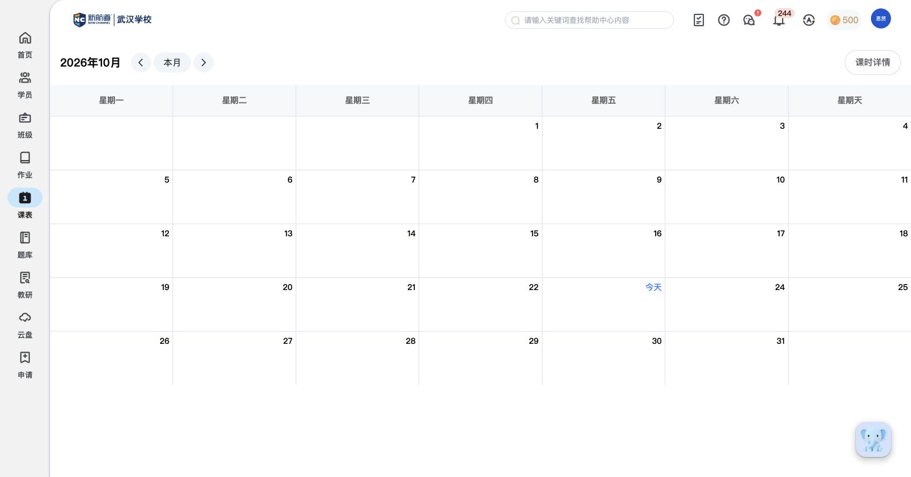
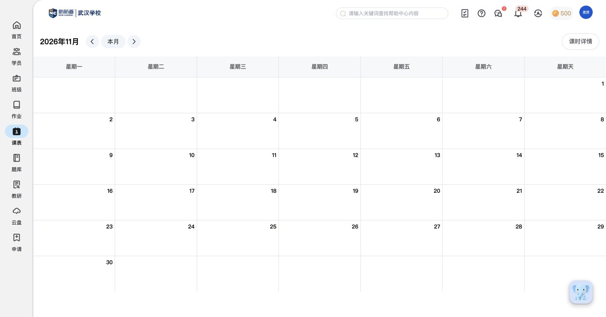
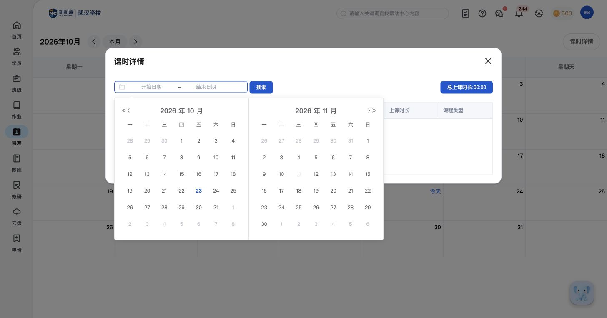
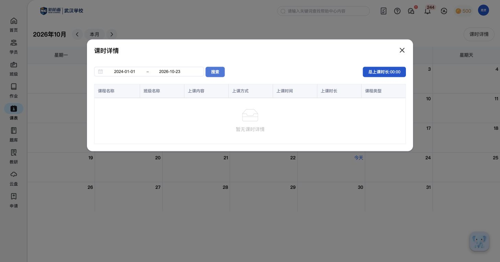
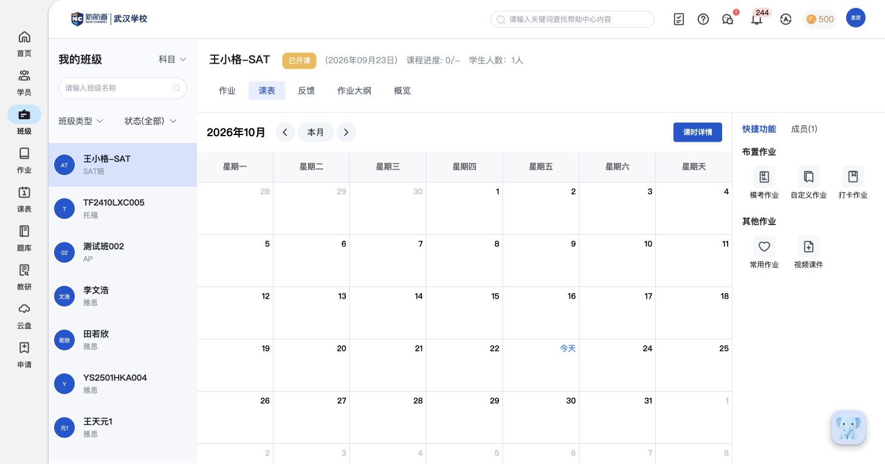

CT01 按月份与星期查看日程
功能内容：顶部显示当前查看的年月；月历按星期一至星期天分为七列，日期随月份排列；当前日期以“今天”标记。
实际操作：刷新校校确认教师账号仍有效，进入课表，查看2026年10月的日历与今天标记。
说明：当前10月以及试看的9月、11月没有课程卡片；这里只记录日历结构，不补写未见的课程展示字段。

调研报告：课表功能结构与清单。本页保留逐次操作和截图，供追溯具体证据。
2026-10-23 · 教师端 · 5组功能观察
先确认登录有效，随后查看月历与课时详情。功能清单依据实际页面；当前没有课程样例，用户已同意暂缓新增课程环节。
功能内容：顶部显示当前查看的年月；月历按星期一至星期天分为七列，日期随月份排列；当前日期以“今天”标记。
实际操作：刷新校校确认教师账号仍有效，进入课表，查看2026年10月的日历与今天标记。
说明：当前10月以及试看的9月、11月没有课程卡片；这里只记录日历结构，不补写未见的课程展示字段。
功能内容：年月旁有上一月、下一月和本月入口；切换后更新年月标题与日期布局；点击本月返回当前月份并显示今天。
实际操作：从10月切到9月，点击本月返回10月，再切到11月后返回。
说明：本条为实际页面浏览和查询，没有新增或修改课程。


功能内容：课时详情弹窗提供开始日期、结束日期和搜索；日期选择器为双月日历，提供月份／年份前后切换；可输入日期范围后执行查询；右上角可关闭弹窗回到月历。
实际操作：打开课时详情及日期面板，输入2024-01-01至2026-10-23，确认输入生效后点击搜索，再关闭弹窗。
说明：未限定日期和指定历史范围的当前样例均为空。数据不足不等于没有查询能力；后续有课程后再补明细样例。


功能内容：查询弹窗右上方有“总上课时长”汇总；当前显示00:00。
实际操作：查看默认查询与指定日期范围后的汇总位置。
说明：00:00是当前空数据样例，不据此推断哪些课程状态计入时长、时长单位换算或结算规则。

功能内容：课时详情表提供七列：课程名称、班级名称、上课内容、上课方式、上课时间、上课时长、课程类型；无记录时显示“暂无课时详情”。
实际操作：读取课时详情表头，检查查询结果区域。
说明：当前没有数据行，未记录行内操作、分页、排序、导出及各字段的枚举选项。
教师端独立课表及班级课表中未见新增课程按钮；班级快捷区当前是作业相关入口。用户暂无可排课角色，已同意先跳过新增样例。本次没有创建课程；不据此认定其他角色或产品整体不支持排课。
